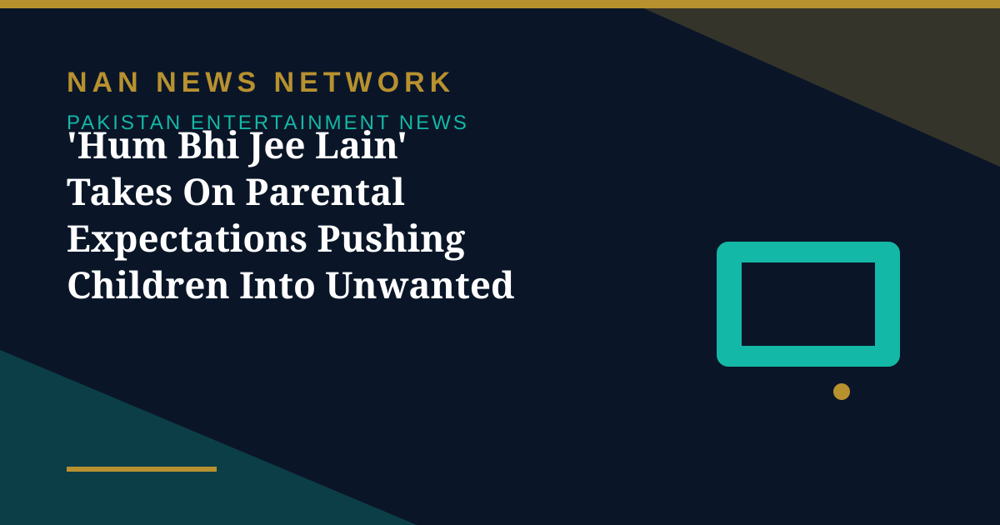

'Hum Bhi Jee Lain' Takes On Parental Expectations Pushing Children Into Unwanted Careers

In many Pakistani households, a child's future is often decided long before they are old enough to understand what they actually want to become — and that conflict is at the heart of the Express Entertainment drama Hum Bhi Jee Lain, The Express Tribune reported on November 1.
A writer pushed towards accountancy
Actor Sharoze Sabzwari plays Arsal, a young man with a writer's imagination who is being pushed towards accountancy. Arsal has lost both his parents, leaving his elder sister, played by Faiza Hassan, responsible for raising him and deciding his future. Sabzwari told The Express Tribune the story immediately appealed to him because of the contradiction at the heart of his character: a creative young man caught between his family's expectations and his own ambitions.
Art, and the business of art
While the drama explores the freedom to choose one's own path, Sabzwari also spoke about the challenges of pursuing creative ambitions in Pakistan's entertainment industry. As he put it, art is also a business, and production houses are there to make money at the end of the day — a tension the drama sets against its central question of who gets to decide a young person's future.
Sources: Express Tribune, November 1, 2026
More on Pakistan Entertainment News
- Sheheryar Munawar Announces New 'Dar-e-Nijaat' OST After Fans Kept Asking for It
- 'Ghost School' Opens in Pakistani Cinemas After a Long Censor Battle in Sindh
- Faysal Quraishi and Hareem Farooq Decry Alleged 'Smear Campaign' Against 'Mango Jutt'
- World Culture Festival 2026 Opens in Karachi With 150 Countries Taking Part
- Punjab Plans Stricter Laws for Theatre and Stage Dramas, Replacing 1876 Act
- Faran Tahir Returns to Marvel as Raza in Vision Quest After 18 Years
- Ramayana Buzz Reaches Karachi as Fans Display Film Poster at Temple
- Humayun Saeed Calls for Pakistan's Own OTT Platform to Take Dramas Global
- Dananeer Mubeen Teases 'Bullet Speed' Twists Ahead in 'Hurmat'
- 'Ghost School' Opens in Pakistan Cinemas on October 30 After Censor Court Fight
- Pakistani Dramas to Watch in October 2026: 'Mitti De Baway' Leads the Month
- Pakistani Film 'Wakhri' Selected for UK's South Asian Film Season
- World Theatre Comes to Lahore as Punjab MAAS Festival Runs to October 28
- 'Mango Jutt' Punjabi Action-Comedy Hits Cinemas
- Dar-e-Nijaat Tops 2026 TV Ratings at 16.3 TRP
- Ali Zafar to Make His Pakistani TV Drama Debut in a New Crime Series